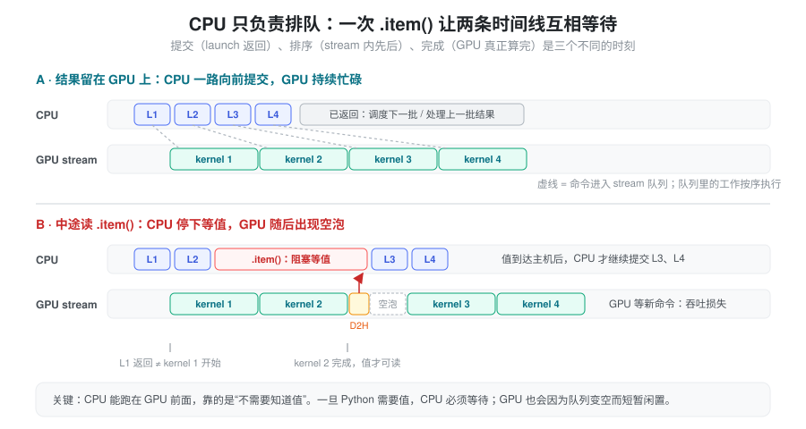
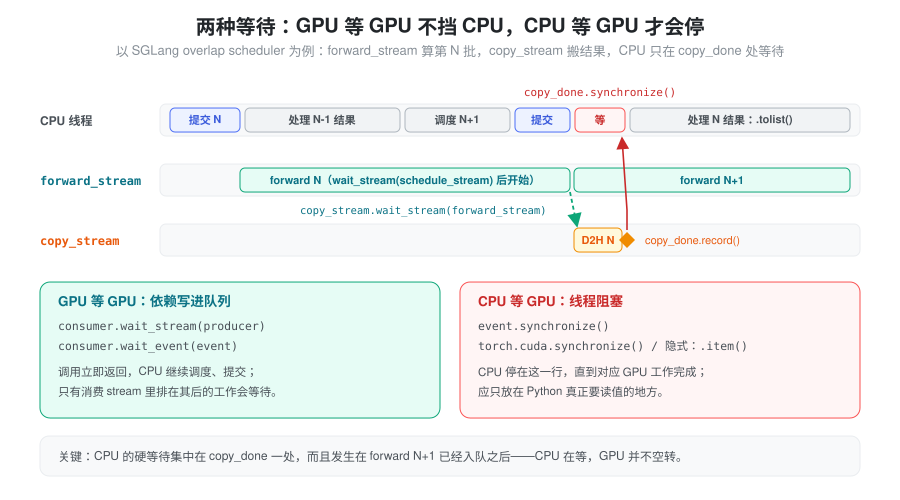
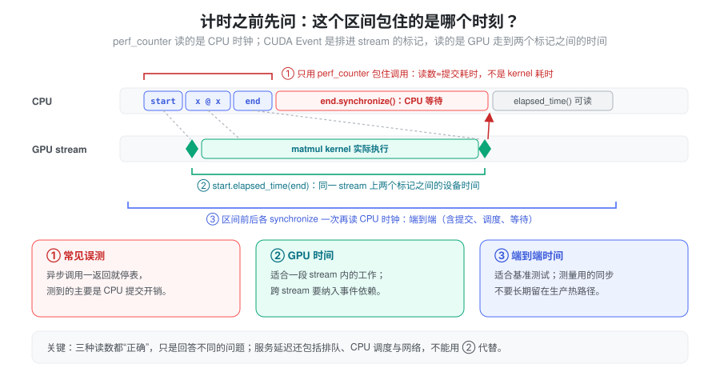
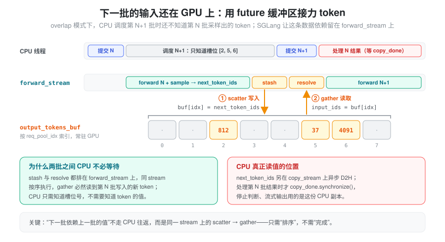

- 一次 forward 的 Python 调用已经返回，GPU
算完了吗？为什么连续两行
y = f(x)、z = g(y)之间不需要加同步？ - 代码里只多了一行
.item()，吞吐为什么明显下降？ - 用
time.perf_counter()包住一次 matmul 只有几微秒，服务延迟却很高——到底测到了什么？
这些问题都来自同一个事实：CUDA 调用的“返回”“排定先后”和“真正完成”是三个不同的时刻。 本篇先建立这个模型，再用它解释 Event、同步点、异步搬运、跨 stream 的存储生命周期、计时和报错位置，最后看 SGLang 的 overlap scheduler 如何让 prefill/decode 的 CPU 调度与 GPU 计算重叠。本篇以 CUDA 后端为例；其他设备后端的同步规则需要分别确认。stream 与 SM、warp 的硬件关系见 Stream。
抽象：CPU 是生产者，stream 是队列
核心的一句话：CPU 不执行 GPU 计算，它只把命令排进队列。 大多数 CUDA 运算在 CPU 侧只是“提交”：把 kernel 和参数放进某个 stream，然后立刻返回，Python 接着往下跑。GPU 从 stream 里按顺序取出工作执行。
于是一个 CUDA 调用有三个需要分开的时刻：
- 提交（submitted）：Python 调用返回。此时只能说“这项工作已经排上队”。
- 排序（ordered）：同一 stream
中的工作按提交顺序执行，所以
z = g(y)天然排在y = f(x)之后，两行之间无需同步。不同 stream 之间没有这种顺序，依赖需要显式建立。 - 完成（completed）：GPU 真正算完，结果可以被主机读取。

这个模型下，性能的关键是让 CPU 始终领先 GPU：只要 Python 不需要知道数据里的值，CPU 就能持续往队列里放工作，GPU 一直有活干。一旦 CPU 需要某个值，它必须停下等待“完成”时刻；等它回来继续提交时，GPU 队列可能已经空了，出现空泡。总体执行语义见 CUDA semantics。
由此得到统一判据：这一行代码只需要“排序”，还是需要“完成”？ 只需要排序的依赖，应该交给 GPU 队列表达；只有真正要读值时，才让 CPU 等待完成。
混淆点一：GPU 等 GPU，还是 CPU 等 GPU
创建多个 stream 不等于让有依赖的计算自动并行；反过来，不同 stream 上有依赖的工作，也不会自动排好先后。建立依赖有两类手段，等待的主体不同：
| 手段 | 谁等待 | 用途 |
|---|---|---|
stream.wait_stream(other) /
stream.wait_event(event) |
消费 stream 中后续工作等待 | 建立 GPU 工作之间的依赖，CPU 通常继续执行 |
event.synchronize() |
CPU 等待指定事件完成 | CPU 即将读取结果 |
torch.cuda.synchronize() |
CPU 等待指定设备上所有 stream 完成 | 调试、整体计时，范围较大 |

前一类把依赖写进 GPU 队列：调用立即返回，只有消费 stream 里排在其后的工作被推迟。后一类让 CPU 线程阻塞。设计跨 stream 流程时，应尽量用前者表达“谁在谁之后”，把后者留给真正要读值的一处。
Event：插在 stream 里的一个标记
上面三种手段背后都是同一个对象。torch.cuda.Event
不是“完成通知”，而是排进某条 stream
的一个标记：event.record(stream) 在
CPU 侧立即返回，GPU
执行到这个位置时，标记才算“发生”。之后谁去看这个标记、怎么看，决定了它的三种用法：
| 操作 | 谁在等 | 用法 |
|---|---|---|
consumer.wait_event(e) |
consumer stream 中其后的工作 | GPU 等 GPU：只等“生产者走到这一步”，比
wait_stream 更精确 |
e.synchronize() |
CPU 线程阻塞 | CPU 等 GPU：读值前确认这一步已完成 |
e.query() |
无人等待，立即返回 bool | CPU 轮询：已完成就处理，未完成就先干别的 |
start.elapsed_time(end) |
需两端都已完成 | 计时：两个标记之间的设备时间，需
enable_timing=True |
wait_stream(producer) 等价于“在 producer
当前末尾 record 一个 event，再让 consumer 等它”，所以会把
producer 上已提交的全部工作都当成依赖。如果
consumer 只依赖其中前半段，在那一点单独 record 一个 event 再
wait_event，就能少等一段：
done = torch.cuda.Event()
with torch.cuda.stream(producer):
a = f(x)
done.record() # 只标记 a 的完成点
b = g(a) # producer 继续做与 consumer 无关的工作
with torch.cuda.stream(consumer):
consumer.wait_event(done)
c = h(a) # 只等 a，不等 bEvent 的语义见 torch.cuda.Event。注意 event 只表达执行顺序，不管内存是否会被提前复用——那是下文“跨 stream 生命周期”的问题。
混淆点二：隐式同步——Python 想知道数据里的值
x.shape、x.stride()、x.dtype
等元数据一般可在 CPU 侧直接获取，不需要等待 GPU。CUDA
张量的值则需要等待设备计算完成并取回主机，例如：
- CUDA 标量的
.item()、bool(tensor)； - 用 CUDA 标量驱动 Python 的
if； .tolist()或打印 CUDA 张量的具体值；- 默认阻塞的 GPU 到 CPU 拷贝。
next_token = logits.argmax(dim=-1)
# 若下一步仍在 GPU 使用 next_token，这里可以继续排队。
# 若调用 next_token[0].item()，CPU 就需要等待这个值。这些写法在代码里看不到“synchronize”字样，却等价于让 CPU 停在“完成”时刻，即上面时间线图的 B 情形。采样完成后向客户端发送 token，终究需要访问结果；优化重点是减少不必要的读取、批量搬运，并把同步放在真正需要结果的位置。不要在每个中间层为了日志读取 CUDA 标量。
默认 .numpy() 不能直接转换 CUDA
张量，通常先调用
.cpu()；同步发生在取回数据的路径，而不是“任何
.numpy() 都会同步 GPU”。
同步点清单
隐式同步的共同特征是：CPU 必须知道某个只有 GPU 算完才知道的东西——要么是值，要么是由值决定的输出大小。按这个判据可以归成几类：
| 类别 | 常见写法 | CPU 需要知道什么 |
|---|---|---|
| 显式等待 | torch.cuda.synchronize()、event.synchronize()、stream.synchronize() |
工作是否完成 |
| 读值 | .item()、.tolist()、bool(t)、if t:、print(t) |
张量的值 |
| 输出形状依赖数据 | torch.nonzero(t)、布尔掩码
x[mask]、torch.unique(t)、未给
output_size 的
repeat_interleave |
结果有多少个元素，才能分配输出 |
| 设备到主机拷贝 | 默认的
.cpu()、.to("cpu")、拷到 pageable
内存 |
拷贝完成后数据才可用 |
| 分配器回收 | 缓存不够时释放缓存块重新向驱动申请、torch.cuda.empty_cache() |
驱动释放显存需要等待相关工作 |
第三类最容易漏：x[mask]
看起来只是索引，但输出长度取决于 mask
里有多少个 True，CPU
必须先拿到这个数才能分配结果。热路径上可以改写成固定形状的计算（如
torch.where、预分配后再写入），或使用
torch.nonzero_static
这类显式给出输出大小的接口。
排查时可以打开
torch.cuda.set_sync_debug_mode("warn")，让
PyTorch 在发生同步的 CUDA 操作处告警；它覆盖的是 PyTorch
能识别的同步调用，不能替代 profiler 中 CPU
时间线上的等待观察。见 set_sync_debug_mode。
混淆点三：non_blocking 与计算重叠是两件事
non_blocking=True 请求让搬运尽可能不阻塞
CPU，解决的是“CPU 是否等待”；搬运能否与 GPU
计算重叠，是另一个问题，取决于 pinned
memory、copy engine、stream
安排以及两项工作之间是否有数据依赖。
即使源张量已经 pinned，如果拷贝和计算都放在同一个
stream，后续计算仍按顺序等待拷贝——这正是“排序”规则。为了重叠，通常要把独立工作放在不同
stream，并建立正确的消费依赖。临时调用
pin_memory()
本身需要开销，不一定比直接拷贝更快。见官方 pinned
memory 与 non_blocking 教程。
异步传输把“提交”和“完成”拉开了距离，也就要求在这段时间里遵守缓冲区生命周期：
- pinned CPU 源缓冲区在 H2D 完成前不能被覆盖；
- 异步 D2H 的 CPU 目标缓冲区，在拷贝完成前不能读取；
- 跨 stream 使用 CUDA 张量，除了计算依赖，还要保证分配器不会过早复用其存储，见下一节。
混淆点四：跨 stream 时，顺序和生命周期要分别保证
跨 stream
使用一个张量，需要同时回答两个问题：消费者会不会读得太早（顺序），存储会不会被回收得太早（生命周期）。wait_stream/wait_event
只解决前者。
生命周期问题来自 caching allocator 的一个前提：每个块记住它的分配 stream，Python 引用归零时，块立即回到这条 stream 的缓存，下一次在同一 stream 上的分配可以马上复用——这在单 stream 下是安全的，因为后来的工作必然排在先前工作之后。但如果另一条 stream 还在读这块存储，分配 stream 上新分配的张量就可能覆盖它，而 CPU 侧看不到任何错误。
两种常见处理：
t.record_stream(s)：告诉分配器“t也被 streams使用”。之后t被释放时，分配器在s上记一个 event，等它完成后才复用该块。适合“分配在 A、交给 B 用完即弃”的张量，代价是复用推迟，峰值可能升高。- 延长 Python 引用：把张量挂在某个容器里，直到确定消费者 stream 已经越过使用点再放手。不依赖分配器细节，但要自己证明“放手时机足够晚”。
还有一个对称的问题：写后读之外，还有读后写（WAR）。
生产者 stream 下一轮要覆写一块共享缓冲区时，必须等消费者
stream 把上一轮内容读完——这同样需要 event
依赖，而不是只在“写完才能读”的方向上建依赖。分配器层面的细节与示意图见
显存管理：跨 stream
生命周期，CUDA
semantics 中也有 record_stream 的说明。
混淆点五：计时测的是哪个时刻
只用 time.perf_counter() 包围异步 CUDA
调用，停表时只到了“提交”时刻，测到的可能主要是 CPU
提交时间。CUDA Event 则是排进 stream 的标记，GPU
执行到它时才记录时间，因此能度量设备上一段工作。

import torch
x = torch.randn(1024, 1024, device="cuda")
for _ in range(5):
y = x @ x # 预热
torch.cuda.synchronize()
start = torch.cuda.Event(enable_timing=True)
end = torch.cuda.Event(enable_timing=True)
start.record()
y = x @ x
end.record()
end.synchronize()
elapsed_ms = start.elapsed_time(end)这测量两个事件之间的设备时间，不直接代表包含请求排队、CPU 调度、数据处理和网络返回的服务延迟。跨 stream 的工作要纳入事件依赖，不能假定一对事件自动覆盖所有 stream。
测端到端耗时可在测量区间前后同步，再使用 CPU
时钟；但不要把用于测量的同步长期留在生产热路径。torch.profiler
的 CPU/CUDA trace
可以把两条时间线并排画出来，帮助区分提交间隙、搬运、kernel
执行与同步等待。见 PyTorch
Profiler。
混淆点六：异步错误为什么出现在后一行
报错同样遵循“完成”时刻：kernel 在 GPU 上执行出错时，提交它的 Python 调用早已返回，错误只能在下一次 CPU 与 CUDA 交互时被发现——可能是后续的同步、一次拷贝，或另一个毫不相关的 kernel 提交。因此 Python 堆栈指向的往往是“发现错误的地方”，而不是“出错的地方”。
还要知道两点：
- 有些错误是粘性的。 非法内存访问这类错误会让当前进程的 CUDA context 进入不可用状态，之后的 CUDA 调用都会失败，通常只能重启进程。服务里看到一串连锁报错时，第一条才有诊断价值。
- 设备端断言也是异步的。
torch._assert_async(cond)把检查放到 GPU 上，不让 CPU 读值，失败时同样延后报告。SGLang 在 CI 中用它校验FutureMap的读取：managers/overlap_utils.py的_assert_nonneg_and_invalidate()断言读出的 token 非负并把槽位写回-1，专门捕获“没写就读”的接力 bug，生产环境默认关闭。
定位手段按代价从低到高：
CUDA_LAUNCH_BLOCKING=1：每次 kernel 提交后等待完成，让报错位置与出错 kernel 对应；它改变执行时序，不能用于性能测试，也可能让依赖时序的问题消失。见 CUDA 环境变量。- 在怀疑区域前后临时插入
torch.cuda.synchronize()，二分缩小范围。 compute-sanitizer检查越界访问、竞争等内存错误，开销很大，适合离线复现。
在 SGLang 中：overlap scheduler 把同步推迟一拍
推理服务每个 decode step 都必须把新 token 取回 CPU，用来判断停止条件、更新请求状态、发给客户端——这个同步躲不掉。SGLang 的 overlap scheduler 做的事，是让这次必要的等待发生在下一批已经入队之后，从而 CPU 在等，GPU 不空转。上面“两种等待”图描绘的正是这条流水线。
主循环是
python/sglang/srt/managers/scheduler.py 中的
Scheduler.event_loop_overlap：先
run_batch() 提交当前批次，把
(batch, result) 放进
result_queue，再弹出上一批的结果处理。几个与本篇对应的细节：
- 用 stream 依赖代替 CPU 同步。
调度线程的 GPU 工作在
schedule_stream上；run_batch()里先forward_stream.wait_stream(self.schedule_stream)再执行 forward，结果拷贝前又让copy_stream.wait_stream(self.forward_stream)。这些都只是“排序”，CPU 不停。代码注释说明了动机：结果 D2H 放在copy_stream上，可与下一次 forward 重叠，而不是在forward_stream上串行。 - 异步 D2H 同时处理目标与源的生命周期。
managers/utils.py中的_async_d2h()在 CUDA 上先分配 pinned 的 CPU 目标张量，再copy_(t, non_blocking=True)，并对源张量调用record_stream()，防止缓存分配器在拷贝 stream 完成前复用源存储。GenerationBatchResult.copy_to_cpu()用它搬运next_token_ids、logprob 等，最后copy_done.record()。 - 唯一的硬等待放在读值之前。
managers/scheduler_components/batch_result_processor.py中，SchedulerBatchResultProcessor.process_batch_result_decode()先result.copy_done.synchronize()，之后_normalize_decode_outputs()才对next_token_ids调用.tolist()。由于此时读的是已同步的 CPU pinned 张量，.tolist()不再触发设备同步。
# scheduler.py, run_batch()（节选、简化）
self.copy_stream.wait_stream(self.forward_stream) # GPU 等 GPU
with self.copy_stream_ctx:
batch_result.copy_to_cpu(...) # pinned D2H + copy_done.record()
# 下一轮循环处理该结果时：
result.copy_done.synchronize() # CPU 等 GPU，只在这里下一批的输入还没回到 CPU：FutureMap
推迟同步带来一个新问题：decode 第 N+1 步的输入正是第 N 步采样出的 token，而 CPU 调度第 N+1 批时，这些 token 还在 GPU 上没算完。若为此读值，重叠就前功尽弃。
SGLang 的做法是让这条数据依赖完全留在 GPU
上。managers/overlap_utils.py 的
FutureMap 持有一块按 req_pool_idx
索引、常驻 GPU 的 output_tokens_buf：
- 第 N 批 forward
之后，
Scheduler._relay_forward_payload()调用future_map.stash()，在 forward_stream 上执行output_tokens_buf[req_pool_indices] = next_token_ids； - 第 N+1 批进入 forward
时，
resolve_forward_inputs()执行input_ids = output_tokens_buf[req_pool_indices]。

CPU 调度时只需要知道“这个请求在哪个槽位”，不需要知道
token 的值；scatter 与 gather 排在同一条 forward_stream
上，读必然发生在写之后。这正是本篇的判据：这里只需要“排序”，所以不必等“完成”。
同一函数也处理 prefill：prefill 的输入来自 CPU，用 pinned 的
prefill_input_ids_cpu 以
non_blocking=True 拷入；混合批次再
torch.cat 上 decode 部分从
FutureMap gather 出的 token。
重叠的代价：生命周期与读后写
CPU 领先 GPU 一拍，意味着 Python 侧的对象可能比 GPU 上使用它的工作“先结束”，这正是上文混淆点四的两个问题：
- 保活两拍。 调度线程在 schedule_stream
上准备的 batch 张量交给 forward_stream
使用；
_forward_isolation()在 overlap 模式下调用record_batch_in_overlap()，把 batch 及其字段快照放进长度为 2 的环形缓冲batch_record_buf，保证这些张量在后续两轮内不会被分配器回收。源码注释直言这是“hacky way”，更可靠的方式是逐个record_stream——两种生命周期手段在同一段代码里都出现了。 - 读后写屏障。
run_batch()返回后，_apply_war_barrier()让 schedule_stream 等待 forward 对共享缓冲区的读取完成（有细粒度的shared_read_done_event时wait_event，否则退化为wait_stream(forward_stream)），防止调度线程为下一批覆写仍在被读取的数据。
这一设计也有边界：设置
SGLANG_DISABLE_CONSECUTIVE_PREFILL_OVERLAP
后（默认关闭），is_disable_overlap_for_batch()
会在连续两个 prefill 批次时先处理上一批结果，以吞吐换首批的
TTFT；ROCm（_is_hip）路径则直接在
forward_stream 上拷贝，注释给出的理由是跨
stream 同步的代价高于它所重叠的小型
D2H。重叠是否值得，仍取决于具体硬件和测量。
小结
把 CUDA 执行看成“CPU 往 stream 队列里提交命令、GPU
按序消费”，就能把提交、排序、完成三个时刻分开：同 stream
的先后天然成立，跨 stream 的先后用 event 写进队列，只有
Python 真正需要值（或由值决定的形状）时才让 CPU
等待完成。隐式同步、non_blocking 的边界、跨
stream
的存储回收、计时读数和延迟报错，都是这三个时刻被混淆的不同表现。SGLang
的 overlap scheduler 把这套模型用到极致：结果 D2H 走独立
stream，下一批输入经 FutureMap 在 GPU
内接力，CPU
唯一的硬等待推迟到下一批入队之后。读推理热路径时依次问：这里需要排序还是需要完成？谁在等谁？异步期间缓冲区由谁保活、谁会覆写？再用
profiler 的双时间线验证。